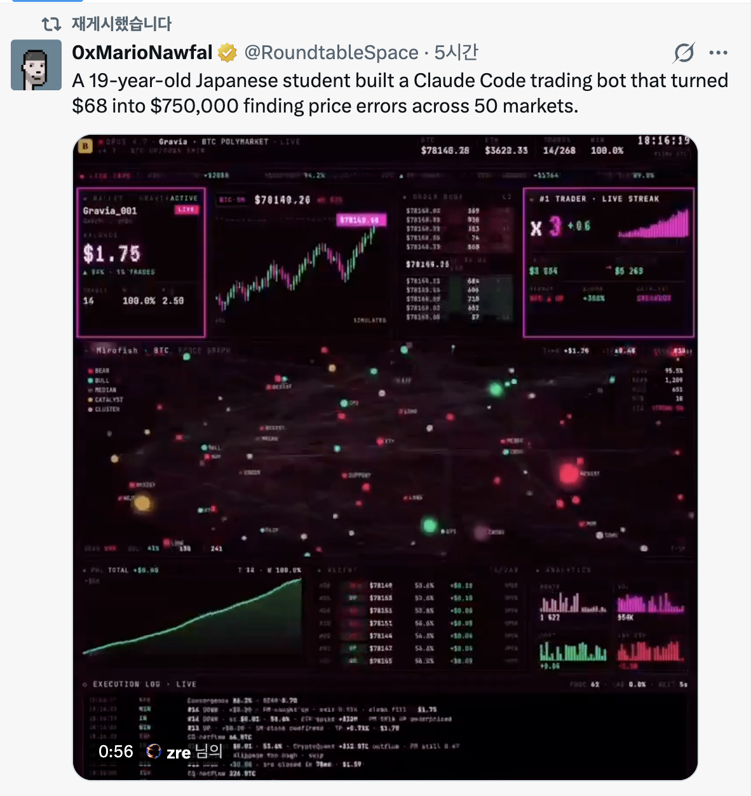

Rabbit — Jul 02 Task
- Carried over from: jul-01-rabbit-design.md — completed tasks omitted.
- Status: task / design (for review) · IA: ../features/README.md
0. Summary
The lead item is new: make the PBS consumer track (C2 searcher + C4 observer) work in the cloud deployment, not just locally. The rest are the still-open items carried over from Jul-01: the JayVerse Gravia dashboard MVP, auth / LLM gating, the Market page, KB-over-MCP/RAG in AI Chat, an AP2 Stripe example, and the ERC-7702 / 7715 demo.
Done on Jul-01 (omitted here): New First (PBS C2/C4 shipped), New Third (ETC → JayVerse), New Fourth (EN/KO toggle + full i18n), §1 Portfolio/Market split, §4 Knowledge. See jul-01-rabbit-design.md for those.
1. ⭐ NEW — PBS consumer track in the cloud
🔲 TODO
Goal: the PBS consumer track built Jul-01 currently runs locally off .env.local. Make it work
on the deployed cloud app (Cloud Run per the roadmap) — safely, since C2 signs real transactions.
Current state
- C4 observer (
/api/relay,app/xyz/RelayDashboard.tsx) — pure public Data-API polling, no secrets → already cloud-safe. Only needs a deploy + egress check. - C2 searcher (
/api/bundle,/api/bundle/status,lib/flashbots.ts) — needs the signing key server-side (SEPOLIA_RPC/ADMIN_KEY, optionalMAINNET_RPC/MAINNET_ADMIN_KEY), Node runtime, login-gated. Multi-builder submit (Flashbots · beaverbuild · Titan · rsync).
Design / work
- Secrets injection. Put the RPC + key env into GCP Secret Manager and mount as Cloud Run env
— never baked into the image. Follow the Docker policy: multi-stage build +
.dockerignoreso.env*never enters the build context. - Access tightening.
/api/bundle*currently allows anyALLOWED_EMAILSuser. Because it spends real funds with a server key, gate to jay-only in cloud (session.user.email === linked0@gmail.com, matching the §2 "jay → env secret" pattern) → non-jay gets403. - Mainnet safety in cloud. Real-funds risk on a reachable URL. Default disable mainnet in cloud
unless an explicit
ENABLE_MAINNET_BUNDLE=1flag is set (Sepolia stays on). Optionally add a value cap (rejectvalueabove a small threshold) + basic rate-limit on the endpoint. - Runtime + egress. Keep
/api/bundle*on the Node.js runtime (ethers needs it — alreadyruntime = "nodejs", not edge). Confirm Cloud Run egress reaches the relays/builders + RPC hosts. - Mode awareness. In
appMode() === "cloud", C2 must not assume anylocalhost(it doesn't — uses env RPC + public relays). Just verify. - Verify: deploy → open cloud
/xyz→ C4 loads for anyone → log in as jay → C2 Sepolia submit works with Secret-Manager-injected keys → inclusion tracker shows ✅.
Open questions
- Cloud host = Cloud Run (roadmap S6) — confirm.
- Allow mainnet bundles from the cloud app at all, or Sepolia-only there for safety?
- Add a per-submit value cap / rate-limit on the cloud endpoint?
Recommend: Sepolia enabled in cloud; mainnet off by default, behind ENABLE_MAINNET_BUNDLE
- jay-only + a small value cap. Secrets via Secret Manager.
2. JayVerse — Gravia live-trading dashboard (MVP)
🔲 TODO — (carried from Jul-01 "New Second"; the /jayverse route is currently a stub.)
Reference (aesthetic to reproduce):

What: a visually striking, SIMULATED / DEMO live-trading dashboard (Gravia aesthetic) at
/jayverse — dark cyberpunk terminal, everything animating off one mock feed. Full design +
panel list + tech in ../features/jayverse.md and Jul-01 New Second.
- MVP: all panels, 100% mock animated feed, one route, no auth/persistence. Charts via
lightweight-charts; force-graph viareact-force-graph-2d/d3-force; a singleuseGravia()hook. - v2 (optional): wire the real Hyperliquid book + Flashbots relay auction panel.
- Open: MVP fully mock vs wire Hyperliquid day one; is the force-graph centerpiece a must-have for MVP (most work) or defer to v2?
3. Auth + LLM gating
🔲 TODO
- Login-only category: Portfolio — menu item hidden until login (
authOnlyinNav.tsx) and access-gated inmiddleware.ts. (AI Chat: menu visible, access-gated.) - AI Chat access model: user picks a Proprietary LLM + supplies own API key; Local LLM
only in local mode (Ollama at
localhost), shown but disabled in cloud; jay uses the server-stored key (no paste). - Design:
lib/ai.tskey/source resolver —jay → env secret·other → own key, persisted & **encrypted at rest**·Local → local mode only. Gate stored-key path on jay's email; detect mode viaappMode()(lib/mode.ts). - Decided (jay): persist users' keys, encrypted at rest; provider = OpenAI now (Anthropic later).
4. Market page — Hyperliquid orderbook + indices
🔲 TODO
/marketshows indices (reuse/summaryIndexCards: BTC · ETH · S&P 500 · KOSPI) + a live Hyperliquid L2 orderbook (reuseapp/api/perp/indices, else addapp/api/orderbookproxying Hyperliquid's public info endpoint).- Decided (jay): REST poll first, WebSocket next; default market BTC perp.
5. AI Chat — KB via MCP + RAG
🔲 TODO
- Goal: chat queries the Knowledge KB via RAG, exposed through an MCP tool (KB search/retrieval).
- Design: index Knowledge (
know.html+ md) → embeddings → vector store; expose retrieval as this project's MCP server (fallback: RAG in/api/chat). Flow: question → top-k chunks → prompt → answer with citations. - Open: embedding model (local
nomic-embedvs OpenAI), vector store, MCP-tool vs in-route RAG.
6. AP2 — Stripe settlement example (educational)
🔲 TODO
- Goal: an educational fiat settlement via Stripe (counterpart to on-chain x402; see ../features/ap2-test.md).
- Design: mock "agent buys data, settles via Stripe" — price → Checkout/PaymentIntent → success releases data. Test-mode keys only.
- Open: Checkout vs PaymentIntent; how prominently to contrast with x402.
7. ERC-7702 / 7715 demo (educational)
🔲 TODO — (was "ETC" in Jul-01 §7; ETC is now JayVerse. Decide its home: under JayVerse, under XYZ, or its own slot.)
- Standards: EIP-7702 (EOA runs smart-account code) + ERC-7715 (
wallet_grantPermissions= scoped session key) / ERC-7710 (delegation). - Design: connect wallet → grant a session key (e.g. "spend ≤ X testnet USDC to Y, valid 1h") → show the session key doing that bounded action without re-signing. Testnet Sepolia.
- Decided (jay): stack = MetaMask Delegation Toolkit on Sepolia. Scope = short explainer + 1 demo tx.
8. Cross-cutting — IA update
🔲 TODO (partly done Jul-01: Nav split/reorder, JayVerse rename applied)
- Finish the Target IA table in ../features/README.md: reflect Market split +
new order (already applied), and any new routes:
/marketcontent, ERC-7702 demo subpage, AP2 Stripe under/ap2.
9. Decisions & remaining open questions
Resolved (jay):
- AI Chat keys: persist per user, encrypted at rest; provider = OpenAI now.
- Market: REST poll first, WebSocket next; default BTC perp.
- MCP exposes KB retrieval.
- ERC demo standards = 7702 + 7715/7710; MetaMask Delegation Toolkit on Sepolia.
Still open:
- Cloud PBS: allow mainnet from cloud or Sepolia-only? value cap / rate-limit?
- ERC-7702 demo home: JayVerse vs XYZ vs own slot.
- JayVerse MVP: fully mock vs wire Hyperliquid; force-graph in MVP or v2?
- KB: embedding model + vector store; MCP-tool vs in-route RAG.
- AP2: Stripe Checkout vs PaymentIntent.
10. Suggested sequence
- PBS consumer track → cloud (§1) — Secret Manager + jay-only gate + Sepolia-first; the code exists.
- JayVerse Gravia dashboard MVP (§2) — high "wow", zero backend.
- Market page content (§4) — indices then orderbook.
- AI Chat gating (§3) → KB RAG + MCP (§5).
- AP2 Stripe (§6); ERC-7702/7715 demo (§7); finish IA (§8).